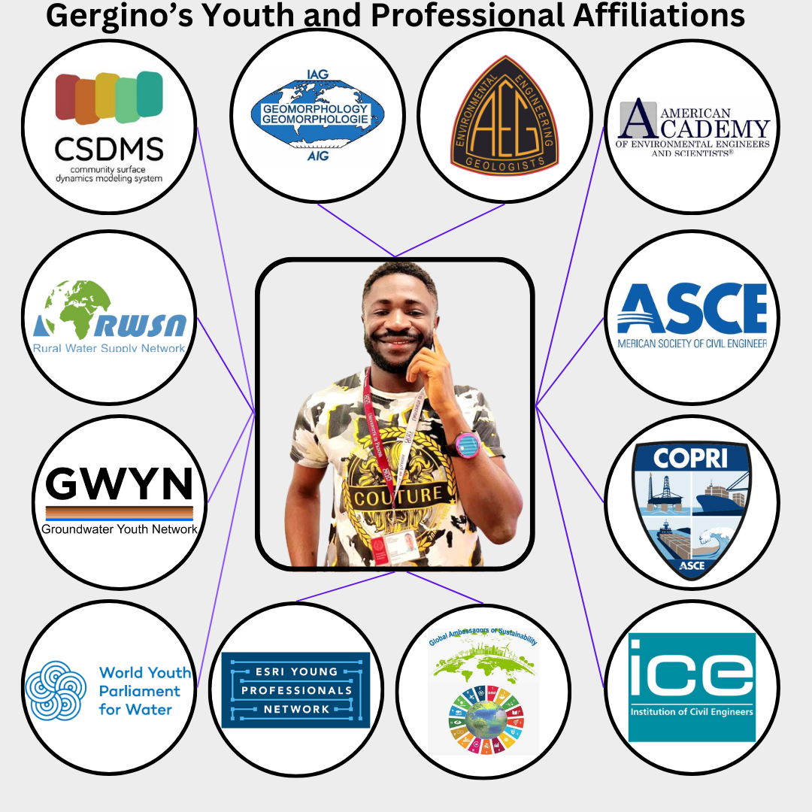
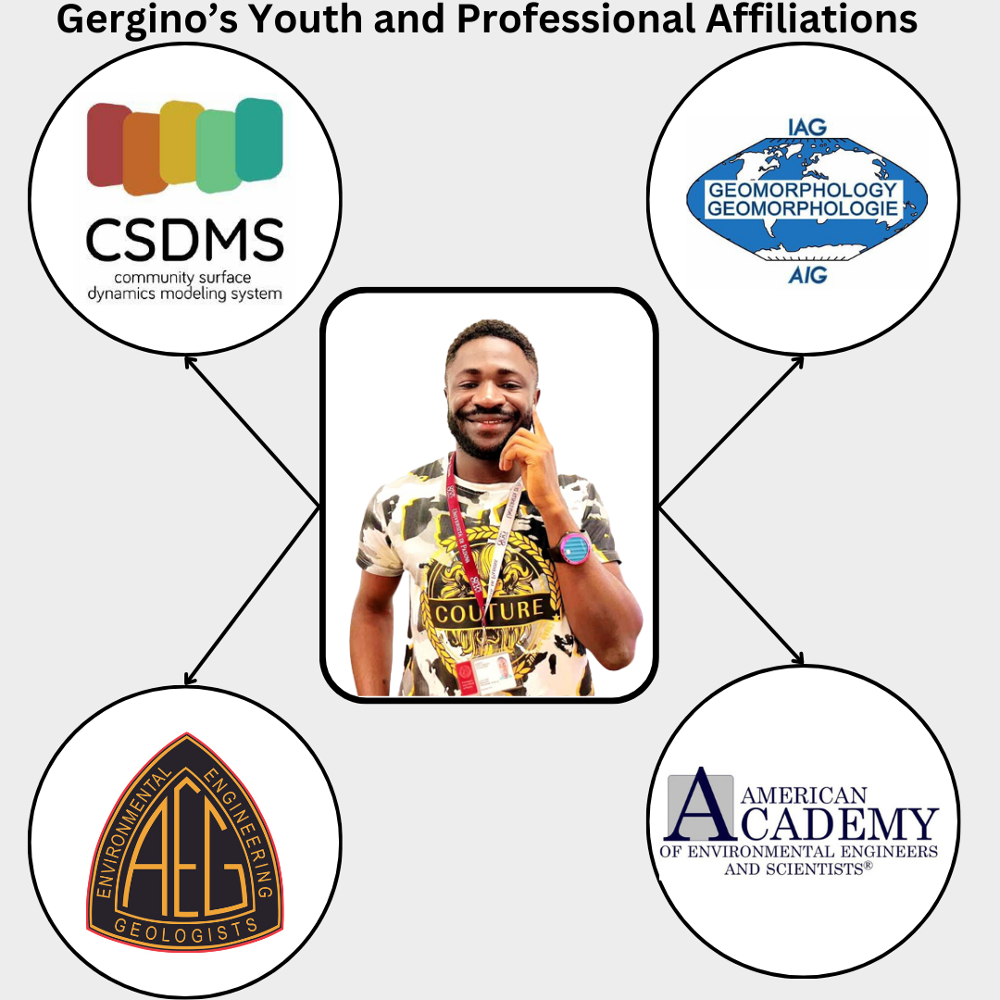
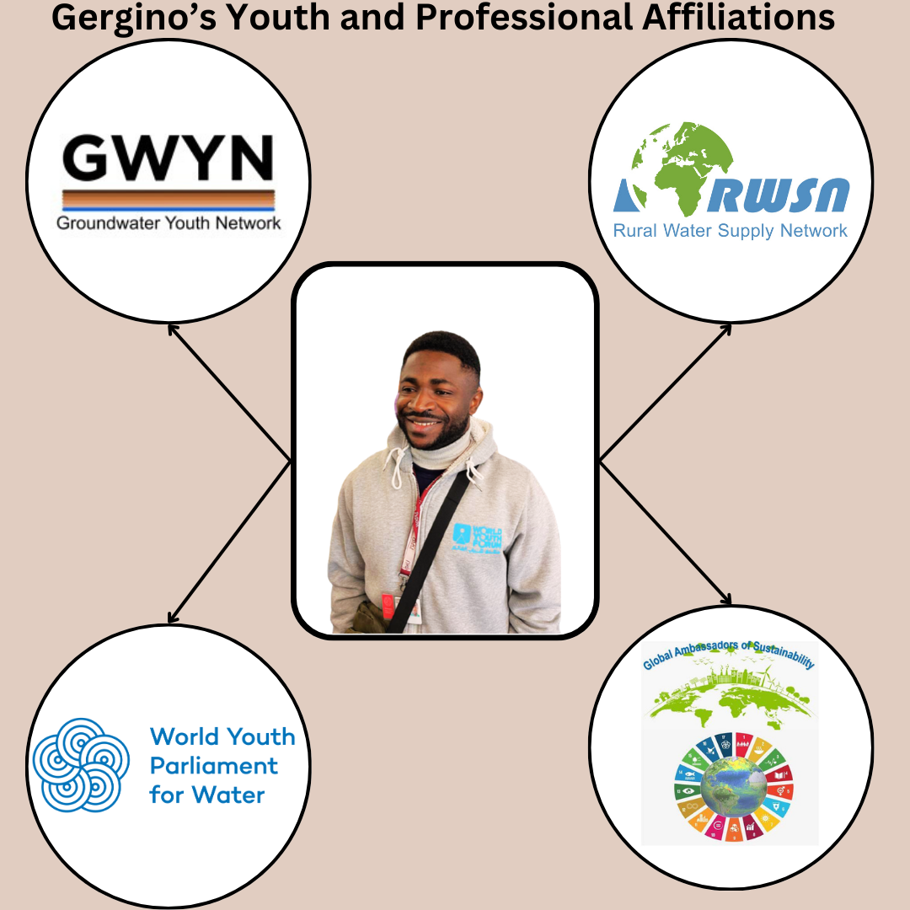
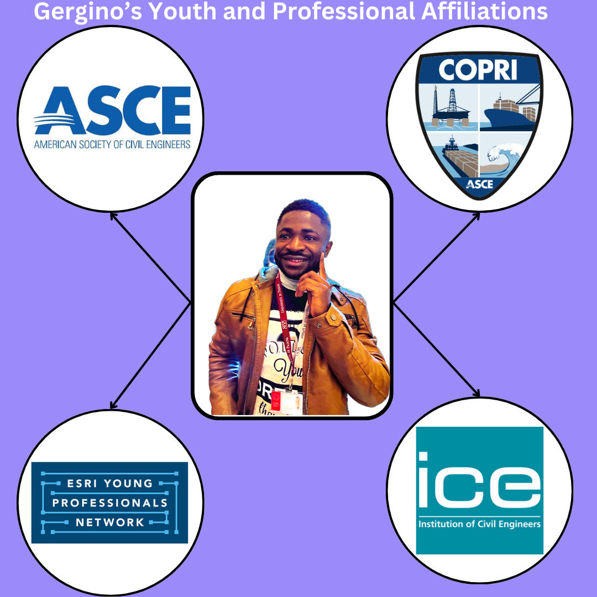

Land subsidence
Measuring sinking coastlines
Satellite SAR interferometry (InSAR) to quantify subsidence in Douala and link it to land-use change, urban expansion and subsurface geology.
See research outcomesEnvironmental Engineer. Researcher. Sustainability Advocate.
I study how land subsidence, sea-level rise and groundwater extraction put coastal cities at risk, with a focus on the Gulf of Guinea. I connect engineering, research and strategy to build data-driven solutions for water, energy and environmental resilience in Africa.

Affiliations and networks




I am an Environmental Engineer from Cameroon, completing my Ph.D. at the University of Padova (DICEA). My work covers sustainability strategy, environmental analytics, and water and groundwater sustainability.
I want to help emerging economies, where institutional and technical voids slow progress, turn knowledge into action. I am complementing my engineering background with strategic management and international management.
True power now lies in the ability to learn continuously, access relevant information, and use it effectively and sustainably.Gergino Chounna Yemele
Satellite SAR interferometry (InSAR) to quantify subsidence in Douala and link it to land-use change, urban expansion and subsurface geology.
See research outcomesAssessing how many people and assets along the Gulf of Guinea are exposed to elevation-based risk now and by 2050.
See research outcomesSite-specific numerical and deep learning models, and mitigation strategies for Cameroon and similar coastal regions.
See research outcomesI want to contribute to a more sustainable and decent world through scientific research and development, improving access to water, energy and education. I also work to reduce the under-representation of scientists in the water sector and in adaptation to geo-environmental hazards.
Since 2022 I have represented the Rural Water Supply Network on the UNESCO Groundwater Youth Network steering committee, where I chair the communication committee.
I welcome collaborations, speaking invitations and conversations about water, coastal resilience and sustainable development in Africa.